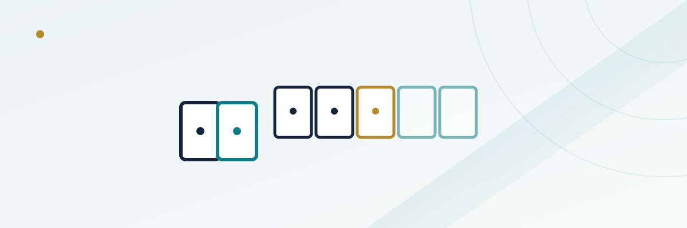

Casino Hold'em Basics: Ante, Call, and the House Edge

Casino Hold'em gets confused with two other table games constantly, and the confusion isn't really the player's fault — Ultimate Texas Hold'em, Caribbean Stud, and Casino Hold'em all put you up against the house with a poker hand and an ante on the table. But the rule that actually separates Casino Hold'em from its closest relative, Caribbean Stud, is a small one with a big effect on your money: how easy it is for the dealer's hand to even count.
In this guide
How a hand is dealt
Every hand starts the same way: you place an ante bet to get cards. You and the dealer each get two hole cards, face down for you, face down for the dealer too (unlike blackjack, the dealer gives nothing away up front). The dealer then spreads a five-card community board in two stages — a three-card flop first, then a turn and river card together — and your best five-card hand is built from any combination of your two hole cards and the five community cards, exactly like a hold'em poker hand.
The decision point comes right after the flop: looking at your two hole cards and the first three community cards (five cards total, not seven), you decide whether to call or fold before the final two community cards are revealed.
The ante and the call decision
If you fold after the flop, you lose your ante and the hand is over for you. If you call, you add a second bet equal to your ante — so a $10 ante becomes a $20 total investment once you call. The turn and river are then dealt, both hands are set using all seven available cards (two hole cards plus five community cards, best five of the seven), and the hands are compared.
This is the structural piece that makes Casino Hold'em feel more like real poker than Caribbean Stud does: your call decision happens with incomplete information, using only three of the five community cards, rather than seeing your full hand and the dealer showing one card like in Caribbean Stud.
How the dealer's hand qualifies
This is the detail that actually matters most for your bottom line. Most versions of Casino Hold'em have the dealer qualify with a pair or better — a noticeably lower bar than Caribbean Stud, where the dealer needs ace-king or better to qualify at all. When the dealer doesn't reach even a pair, the ante typically still pays out at even money (sometimes it pushes instead, depending on the casino's specific rules) and the call bet pushes, regardless of what you were holding.
That easier qualifying standard is a big part of why Casino Hold'em runs a meaningfully lower house edge than Caribbean Stud. In Caribbean Stud, the dealer fails to qualify often enough that players sometimes win only even money on hands that would have paid a much bigger multiple if the dealer had qualified and lost outright — a quiet cost to the player that Casino Hold'em's lower bar avoids most of the time.
The payout table and the house edge
If the dealer qualifies and you beat them, your ante pays even money and your call bet pays out on a sliding scale tied to how strong your winning hand is — the better the hand, the bigger the multiple. Paytables vary by casino, but a common version looks roughly like this:
| Your winning hand | Typical call payout |
|---|---|
| High card or pair | 1:1 |
| Two pair | 2:1 |
| Three of a kind | 3:1 |
| Straight | 4:1 |
| Flush | 5:1 |
| Full house | 7:1 |
| Four of a kind | 20:1 |
| Straight flush | 50:1 |
| Royal flush | 100:1 |
With a correct basic strategy, Casino Hold'em's house edge typically lands in the neighborhood of 2%–2.5%, which puts it closer to blackjack or craps pass-line territory than to Caribbean Stud, which usually runs closer to 5%. That gap is driven almost entirely by the qualifying rule and the more generous payout scale on the call bet, not by any difference in the underlying deck or deal.
Many tables also offer an optional progressive side bet, often requiring a pair of aces or better on your final hand to win anything, with the jackpot tier reserved for a royal flush. Like most progressive side bets at a casino, it carries a notably higher house edge than the base game, and is a separate wager you choose to add, not a required part of play.
Basic strategy: when to call
Because you only see three of the five community cards when you decide, Casino Hold'em strategy is simpler than it looks. The standard, well-documented rule of thumb boils down to two conditions, and calling if either one is true:
- You already have a pair or better using your two hole cards and the three-card flop.
- Your two hole cards are both higher than the lowest card showing on the flop, even without a pair yet — because that gives you a real shot at pairing one of your overcards on the turn or river, which would likely beat whatever the dealer is holding.
If neither condition is met — no pair, and at least one of your hole cards is lower than the lowest card on the board — folding is usually correct, even though it feels passive. Calling too often with weak holdings is the single biggest way players give back the edge this game's rules otherwise hand them.
Casino Hold'em vs. Ultimate Texas Hold'em vs. Caribbean Stud
All three games put a poker hand up against the house with an ante on the table, but the mechanics — and the money — diverge quickly once you look closely.
| Casino Hold'em | Ultimate Texas Hold'em | Caribbean Stud | |
|---|---|---|---|
| When you decide to raise/call | After the flop (3 of 5 community cards seen) | Pre-flop, post-flop, or post-river — multiple decision points | After seeing your full hand and one dealer card |
| Dealer qualifies with | Pair or better (typical) | No qualifying requirement in most versions | Ace-king or better |
| Approx. house edge (optimal play) | ~2.0%–2.5% | ~2.2% | ~5.2% |
| Feel of the game | Simplified, single decision point | Closer to real hold'em strategy, more decisions | Stud-poker pacing, one big decision |
If you've played Ultimate Texas Hold'em and found the multiple bet-sizing decisions overwhelming, Casino Hold'em's single call-or-fold moment is a gentler entry point into house-banked poker games. If you've played Caribbean Stud and walked away feeling like winning hands too often paid even money instead of a real multiple, that's the qualifying rule at work — and it's exactly what Casino Hold'em fixes.
For more on how other poker-style table games compare on house edge, see our guides to Ultimate Texas Hold'em and Three Card Poker, or check our broader house edge guide for how these games stack up against the rest of the casino floor.
Frequently asked questions
Is Casino Hold'em the same game as "Caribbean Hold'em"?
They're generally the same underlying game sold under different branded names at different casinos and software providers. Always check the posted paytable and dealer-qualifying rule at the specific table or online title you're playing, since both can vary.
What happens to my call bet if the dealer doesn't qualify?
In most versions, your ante is paid at even money and your call bet pushes (returned, no win or loss), regardless of what you were holding. Some casinos vary this rule slightly, so it's worth confirming at the table or in a game's help screen before you sit down.
Can I fold after seeing the turn and river, instead of just after the flop?
No. The only fold decision in standard Casino Hold'em comes right after the flop, before the turn and river are revealed. Once you call, you're committed through the final comparison.
Is the progressive jackpot side bet worth playing?
Like most progressive side bets, it carries a higher house edge than the base game and is weighted heavily toward a single big jackpot outcome that's statistically rare. It's a personal risk preference rather than a mathematically favorable addition to your overall expected loss.
Does basic strategy change if I'm playing a live dealer version online instead of at a physical table?
No — the call-or-fold strategy is based purely on your hole cards and the flop, which is identical information whether you're at a physical table or watching a live-streamed dealer. Confirm the specific paytable first, since that's the variable most likely to differ between venues.